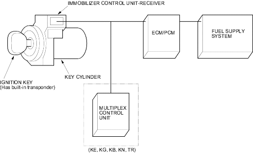

Immobiliser System
|
22-242 |
The vehicle is equipped with an Immobiliser system that will disable the vehicle unless the proper ignition key is used.
This system consists of a transponder located in the ignition key, an Immobiliser control unit-receiver, an indicator light, the multiplex control unit and the ECM/PCM.
The vehicle has two kinds of keys.
When the key is inserted in the ignition switch and turned to the (II) position, the Immobiliser control unit-receiver sends power to the transponder in the ignition key. The transponder then sends a coded signal back through the Immobiliser control unit-receiver to the ECM/PCM.
